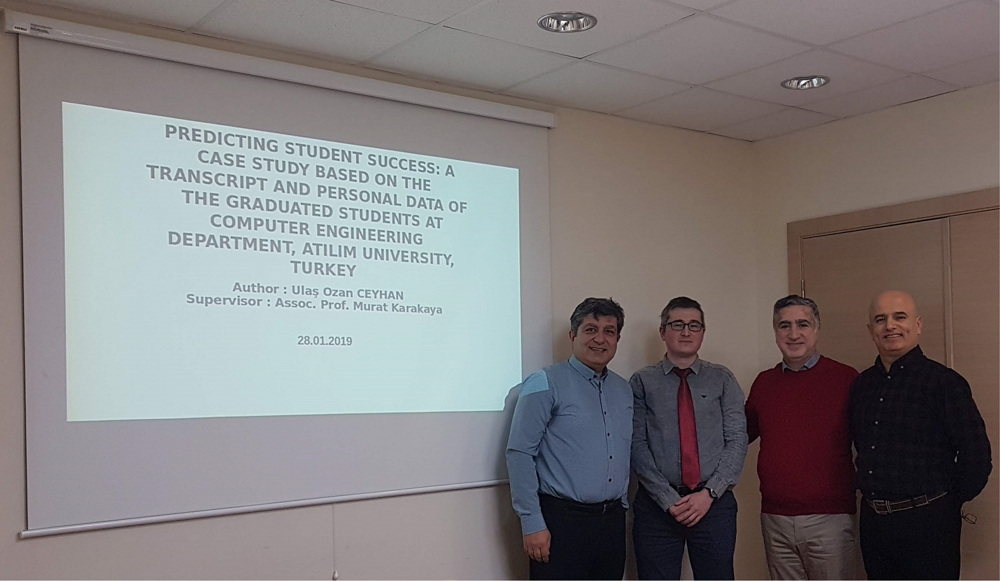

Thesis Supervised |
|||
Ph.D. Dissertation |
|||
Name |
Dissertation Title |
Publications |
|
Master's Theses |
|||
Name |
Thesis Title |
Publications |
|
| Tolga Üstünkök 05 Oct. 2018 - |
SS-MLA:
A Novel Solution For Multi-Label Classification of Remotely Sensed Images [Abstract] [Presentation] |
T. Üstünkök, M. Karakaya, Effect of PSO Tuned P, PD, and PID Controllers on the Stability of a Quadrotor, 2019 1st International Informatics and Software Engineering Conference (UBYMK) , Ankara,Turkey, 139-144, November, 2019. [PDF] [DOI] T. Üstünkök, O. Acar, M. Karakaya, Image Tag Refinement with Self Organizing Maps, 2019 1st International Informatics and Software Engineering Conference (UBYMK) , Ankara,Turkey, 348-353, November, 2019. [PDF] [DOI] |
|
| Ulaş Ozan Ceyhan 05 Oct. 2015 - 28 Jan 2019 |
Predicting Student Success: A Case Study Based On The Transcript and Personal Data Of The Graduated Students At Computer Engineering Department, Atilim University, Turkey [Absract] [Presentation] |
Murat Karakaya, Meltem Eryilmaz, Ulaş Ozan Ceyhan, Analyzing students' Academic Success in Pre-requisite Course Chains: A Case Study in Turkey,International Journal of Engineering Education, Vol. 34, Issue 2 (A), pp 364–370, April 2018. [PDF] [DOI] ISSN: 0949-149X Ulaş Ozan Ceyhan, Murat Karakaya, Investigating Students Success On Prerequisite Chain Courses, The 2nd International Conference on Engineering and Natural Sciences (ICENS 2016), Sarajevo, Bosnia and Herzegovina, May 24 to 28, 2016 |
 |
| Halil Savuran 05 Oct. 2012 - 17 July 2015, |
"Maximizing
Target Coverage of Unmanned Aerial Vehicle Carried On Mobile Platform",
[Absract] [Presentation] |
Halil
Savuran, Murat Karakaya, Efficient
Route Planning for an
Unmanned Air Vehicle Deployed on a Moving Carrier, Soft Computing, 2015.
[PDF] [DOI] ISSN: 1432-7643 Halil Savuran, Murat Karakaya, Route Optimization Methods for Unmanned Air Vehicle Launched from a Carrier, Lecture Notes on Software Engineering, Vol. 3, No. 4, 279-284, ISSN: 2301-3559, Nov. 2015. [PDF] Halil Savuran, Hamdi Demirel, Murat Karakaya, Gemiye Konuşlu İnsansız Hava Araçlarının Hedeflere Rotalanmasının Optimizasyonu, 7.Savunma Teknolojileri Kongresi (SAVTEK-2014), Haziran 2014. [PDF]. Hamdi Demirel, Halil Savuran, Murat Karakaya, İnsansız Hava Araçları için Radar Kaplama Alanlarından Kaçınacak En Kısa Rotanın Hesaplanması, 7.Savunma Teknolojileri Kongresi (SAVTEK-2014), Haziran 2014. [PDF]. |

|